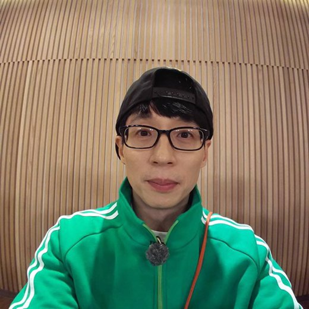

Hypertext Markup Language (html) is the standard markup Language for creating web pages and web applications.6일 스포티비뉴스 취재에 따르면 유재석은 최근 카카오엔터테인먼트(이하 카카오엔터)를 선택하기로 했다. 
유재석은 현재 카카오엔터 산하에 있는 한 레이블에 새 둥지를 트는 방안을 최종 논의 중이다.7월 FNC엔터테인먼트(이하 FNC)와 전속계약이 만료되는 유재석은 오랜 논의 끝에 재계약을 하지 않기로했다. 2015년 7월 FNC와 처음 전속계약을 맺은 그는 3년 후인 2018년 7월 한 차례 재계약했다.다시 3년이 지난 최근에는 더 이상 재계약 없이 각자의 길을 가기로 결정했다.유재석은 오랜 논의 끝에 카카오엔터행을 결정했다. 최근 공격적인 투자로 엔터테인먼트 업계 공룡으로 불리는카카오는 유재석을 품고 업계에서 더 큰 지각변동을 일으키게 됐다.